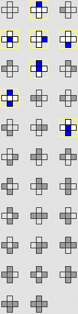
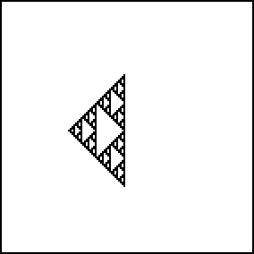

4. Cellular Automata and Fractal Evolution
Two-Dimensional CA Examples
First, the gasket can be grown from an initial condition consisting of a single live cell. Can you find rules to grow gaskets in different orientations?


Return to
2D CA Examples
.